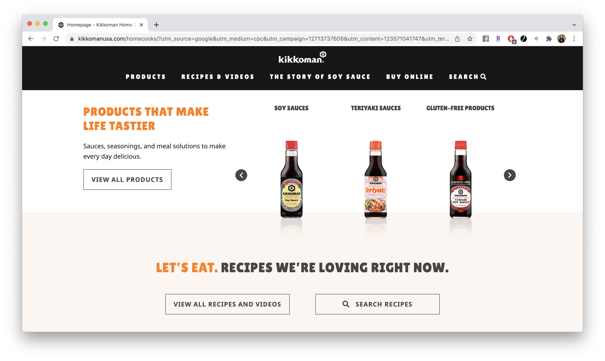
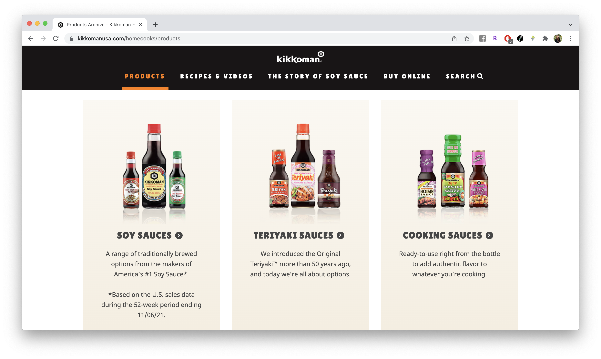

Final project proposal
Introduction
Sauce Station
Need more flavor in your life? Sauce Station is your one-stop shop for all things sauce, condiment, dressing, and more.
Target audience
Sauce Station targets all food lovers who desire an extra boost of flavor to their meals. Sauces are meant to impart, enhance, and or compliment flavors of all sorts of tasty dishes, and sometimes you just need that dip, pour, or spread with whatever you're eating. Whether you're looking for heat, sweet, or tart, our sauce selection has something for everyone.
By offering a special curation of different sauces and condiments, we hope to increase the enjoyment of your eating experience. Check out our products and see what fits your tastes!
Comparative analysis
Frank's Red Hot


Kikkoman USA
 Tabasco


Website content
Home
Welcome to Sauce Station, your one-stop shop for all things all things sauce, condiment, dressing, and more.
[Image of sauce selection]
Products
Hot Sauces
- Hot Ones Hot Sauce | The Classic
- Sriracha Hot Sauce
- Tabasco Hot Sauce
The #1 sauce on Hot Ones! The chiles and sauce are grown/made by Smokin' Ed Currie of Puckerbutt Pepper Co, who says it may be the tastiest hot sauce he's ever crafted. For lots of flavor and a healthy tang, try it on everything, and use liberally.
A bright red, multi-purpose hot sauce is made from red chili peppers, garlic, vinegar, salt, and sugar. The sauce is hot and tangy with just a hint of sweetness.
Made with three simple ingredients and aged in oak barrels for up to three years on Avery Island, Louisiana, before bottling. The recipe originating from Edmund McIlhenny in 1868 has been used by the McIlhenny family for nearly 150 years.
[Hot Sauce selection]
Barbecue Sauces
- Sweet Baby Ray's Original Barbecue Sauce
- Lillie Q's Smoky Barbeque Sauce
- Bachan's Original Japanese Barbecue Sauce
The original, award-winning tangy-sweet pitmaster taste that started it all and still a favorite of BBQ fans the world over.
This Memphis-style BBQ sauce is mild & sweet with a dash of smoke.
The sauce, which uses less than 10 ingredients, hits somewhere between a less-sweet teriyaki and a more-complex shoyu sauce.
[Barbecue sauce selection]
Dressings
- Ken's Simply Vinaigrette Dressing Balsamic
- Annie's Naturals Green Goddess Dressing
- Brianna’s Home Style Dijon Honey Mustard Dressing
Balsamic vinaigrette gets back to its delicious basics using only the ingredients needed to deliver bold, bright flavor. Aromatic aceto balsamico imparts a distinctively fresh, fruity taste to green and pasta salads.
Green Goddess dressing has been a staple on American tables ever since it was created at San Francisco's Palace Hotel in 1920s. Annie's combination of tahini, lemon, chives, and parsley is not only vegan, but it also tastes amazing on literally anything.
This dressing was the perfect balance of sweet and tangy. It has a strong, acidic bite from the Dijon mustard, and is just sweet enough to not be overwhelming. The sweetness (which comes from honey) perfectly balances the sharpness of the mustard.
[Dressings selection]
Sauce Specifics
History of Sauce
The word “sauce” is a French word that means a relish to make our food more appetizing. Sauces are liquid or semi-liquid foods devised to make other foods look, smell, and taste better, and hence be more easily digested and more beneficial.
There are five foundation sauces or basic Sauces. Two of them have a record of two hundred years behind them; they are the “bechamelle” and the “mayonnaise”. They have lasted so long, not only because they are very good, but also because they are so adaptable and provide a fine basis for a considerable number of other sauces. The other three, which also date back to the 18th century, are the “veloute,” the “brune,” and the “blonde.” These five sauces still provide the basis for making of many modern sauces, but no longer of most of them. Modern sauces may be divided into two classes: the “Careme” and “Escoffier” classes. Among the faithful, in the great kitchen of the world, Escoffier is to Careme what the New Testament is to the Old.
Dip, pour or smother: The Sauce Controvery
There's no "right" way to enjoy your sauce, but, in the sauce world, there's a debate going on.
How do you dip, pour, or smother with your sauce? Of course, it may depend on the sauce in question, but that's a question you should ask yourself.
[The five types of sauces]
About Sauce Station
The Sauce Station team is comprised of sauce lovers determined to deliver the world's sauce needs through an e-commerce based website. Place your order today!
[Sauce Station brand graphic]